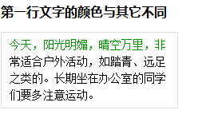

E:first-line/E::first-line
语法：
E:first-line/E::first-line{srules}
说明：
设置对象内的第一行的样式
此伪对象仅作用于块对象。内联对象要使用该伪对象，必须先将其设置为块级对象。
IE6在使用该选择符时有个显式的BUG：选择符与包含规则的花括号之间不能紧挨着，需留有空格或换行。同时还存在该BUG的选择符包括：E:first-letter
CSS3将伪对象选择符(Pseudo-Element Selectors)前面的单个冒号(:)修改为双冒号(::)用以区别伪类选择符(Pseudo-Classes Selectors)，但以前的写法仍然有效。
即E:first-line可转化为E::first-line
兼容性：
- 浅绿 = 支持
- 红色 = 不支持
- 粉色 = 部分支持
| Selector | IE | Firefox | Chrome | Safari | Opera | iOS Safari | Android Browser | Android Chrome |
|---|---|---|---|---|---|---|---|---|
| Basic Support | 6.0 #1 | 2.0+ | 4.0+ | 3.1+ | 3.5+ | 3.2+ | 2.1+ | 18.0+ |
| 7.0+ | ||||||||
| ::first-letter | 6.0 | |||||||
| 7.0-8.0 #2 | ||||||||
| 9.0+ |
- E:first-line选择符不能紧挨着规则集大括号，需留有空格或换行。
- 本质上并不支持伪元素的双冒号(::)写法，而是忽略掉了其中的一个冒号，仍以单冒号来解析，所以等同变相支持了E::first-letter。
<h1>杂志常用的首字下沉效果</h1>
<p>今天，阳光明媚，晴空万里，非常适合户外活动，如踏青、远足之类的。长期坐在办公室的同学们要多注意运动。</p>
h1{font-size:16px;}
p{width:200px;padding:5px 10px;border:1px solid #ddd;font:14px/1.5 simsun,serif,sans-serif;}
p:first-line {color:#090;}
p::first-line {color:#090;}
注意 p:first-letter 和{}之间有空格
